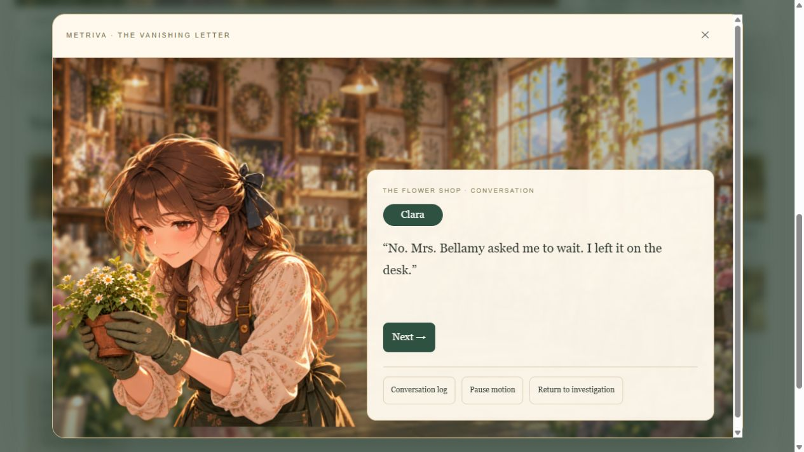
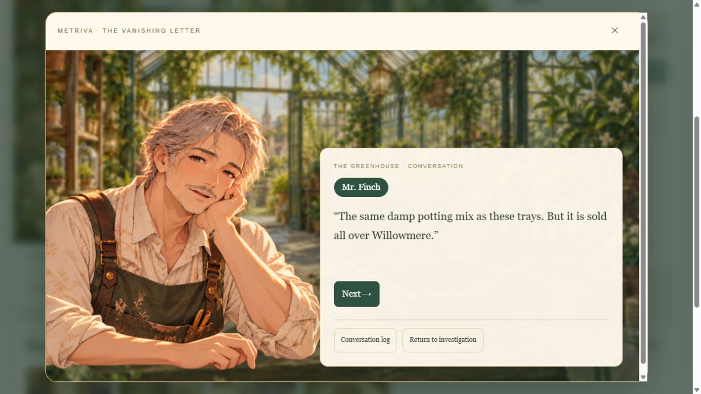
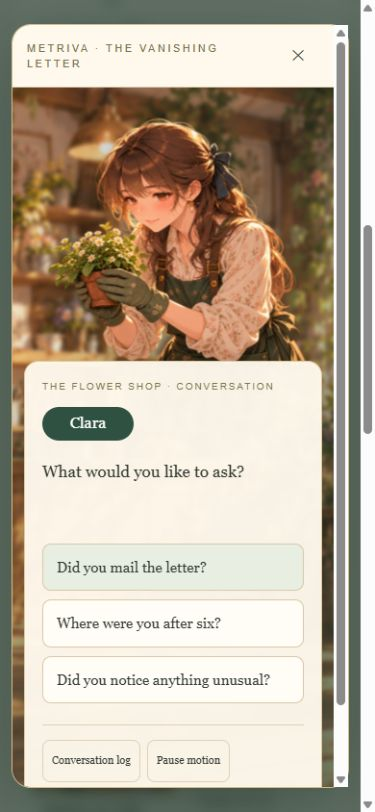
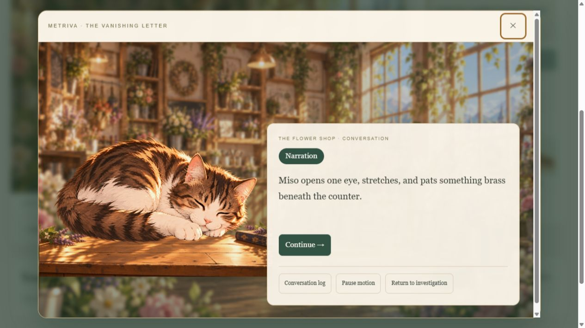
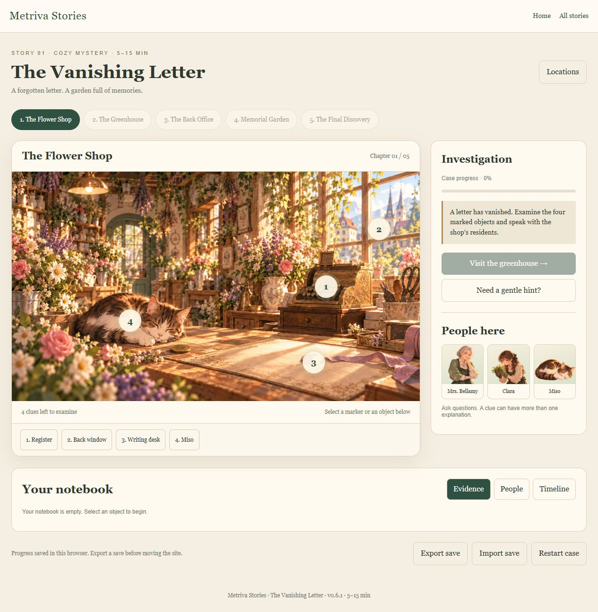

Metriva Stories v0.6.1
Actual game captures and animation recording.

01-clara-conversation.jpg
02-finch-greenhouse.jpg
03-mobile-conversation.jpg
04-miso-in-the-shop.jpg
05-new-flower-shop.jpgactual-animation.gif